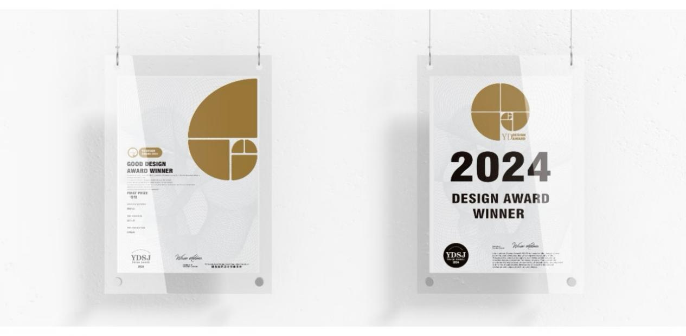
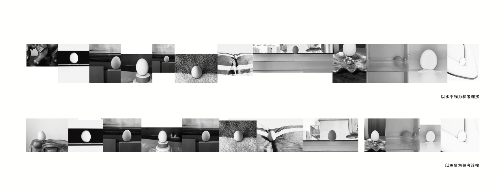
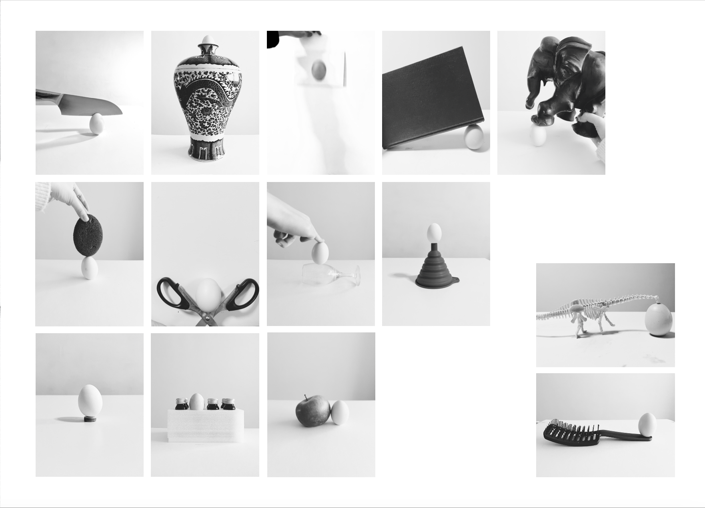
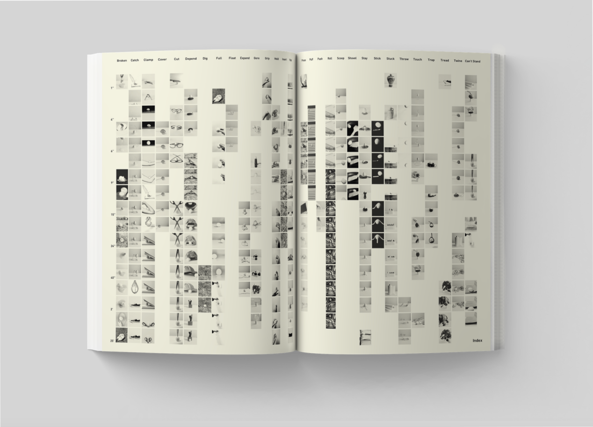
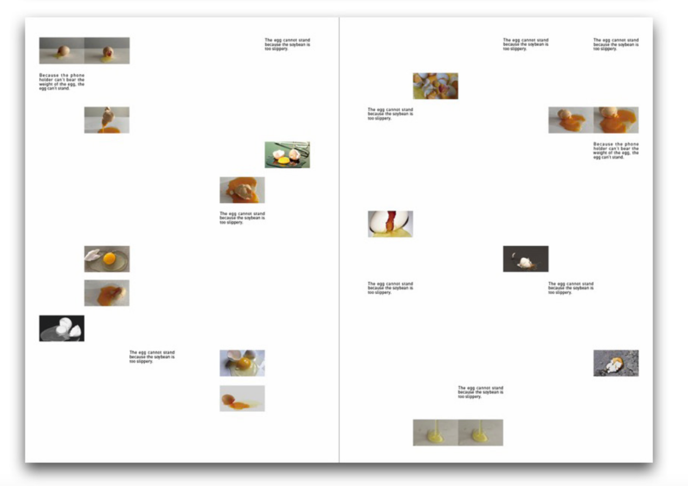
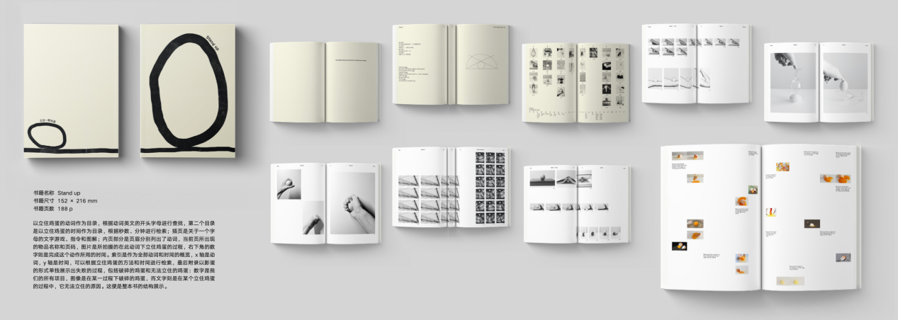
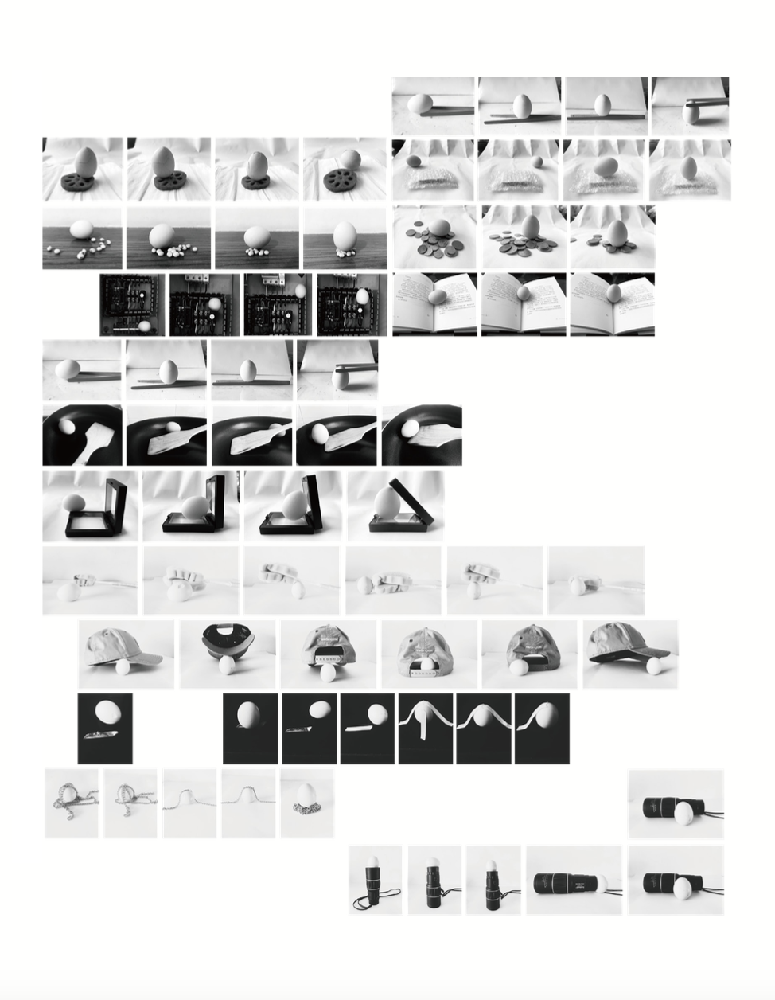

Book design
Stand Up
How to Make an Egg Stand?
First Prize · Graphic Design · Dot Design Awards

This book is an encyclopedia of ways to make an egg stand upright. Photographs document a range of strategies, organized by the verbs that describe each action and the time it takes.
Using external objects to support an egg creates new connections between the egg and otherwise unrelated things, leading to unpredictable results. Making an egg stand is, in fact, one of the simplest and most difficult things in the world.






